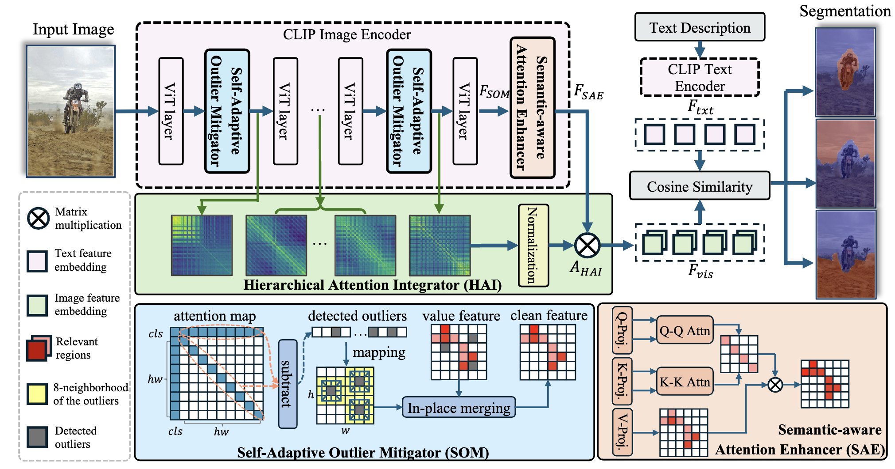

Layer-wise Feature Purification
SFP treats propagated outliers as a structural problem inside the encoder rather than a post-processing artifact.
ICCV 2025 Highlight

Figure 1. SFP purifies CLIP features layer by layer before final open-vocabulary segmentation.
SFP improves training-free open-vocabulary semantic segmentation by focusing on a failure mode inside CLIP-style vision backbones: attention outliers that emerge in intermediate layers and continue to propagate forward. These outliers distort spatial perception and trigger irrelevant over-activation. SFP purifies those features during inference, strengthens semantically relevant attention, and integrates cleaner multi-layer cues to produce more object-centric predictions.
The framework combines three components. A Self-Adaptive Outlier Mitigator detects and mitigates outliers at each layer to stop noisy responses from propagating. A Semantic-Aware Attention Enhancer increases attention intensity on semantically relevant regions so the cleaned features remain focused on actual objects. Finally, a Hierarchical Attention Integrator aggregates multi-layer attention maps into spatially coherent representations for the final segmentation step.
The core insight of SFP is that open-vocabulary segmentation quality depends not only on the final layer output but also on whether intermediate features stay stable and object-centric throughout the backbone.
SFP treats propagated outliers as a structural problem inside the encoder rather than a post-processing artifact.
The enhancer and integrator make the final response maps more spatially coherent and more aligned with true object regions.
The paper reports consistent gains across eight segmentation benchmarks while remaining training-free at deployment time.
The official evaluation spans PASCAL VOC, PASCAL Context, COCO Object, COCO Stuff, ADE20K, and Cityscapes settings. The main takeaway is that better control of intermediate feature quality yields broad gains without adding any training-time supervision at deployment.
@inproceedings{jin2025feature,
title = {Feature Purification Matters: Suppressing Outlier Propagation for Training-Free Open-Vocabulary Semantic Segmentation},
author = {Jin, Shuo and Yu, Siyue and Zhang, Bingfeng and Sun, Mingjie and Dong, Yi and Xiao, Jimin},
booktitle = {Proceedings of the IEEE/CVF International Conference on Computer Vision (ICCV)},
pages = {20291--20300},
year = {2025}
}